Bitgrit — The BGR Token
Bitgrit: visual identity, motion direction and UI design system for the BGR Token launch. One system, so the website, the product and the film all felt like the same company.
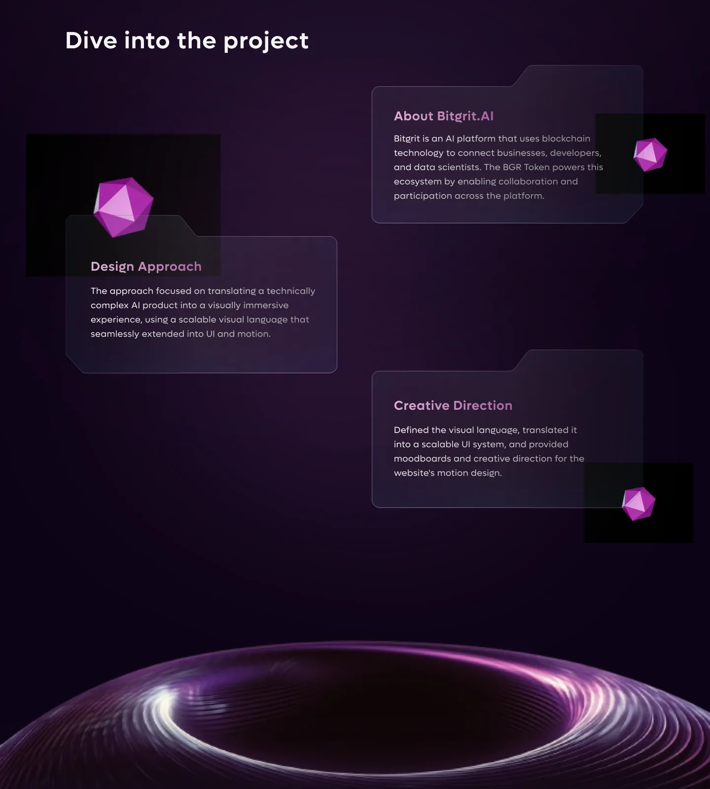
Dive into the project
About Bitgrit.AI
Bitgrit is an AI platform that uses blockchain technology to connect businesses, developers, and data scientists. The BGR Token powers this ecosystem by enabling collaboration and participation across the platform.
Design Approach
The approach focused on translating a technically complex AI product into a visually immersive experience, using a scalable visual language that seamlessly extended into UI and motion.
Creative Direction
Defined the visual language, translated it into a scalable UI system, and provided moodboards and creative direction for the website’s motion design.
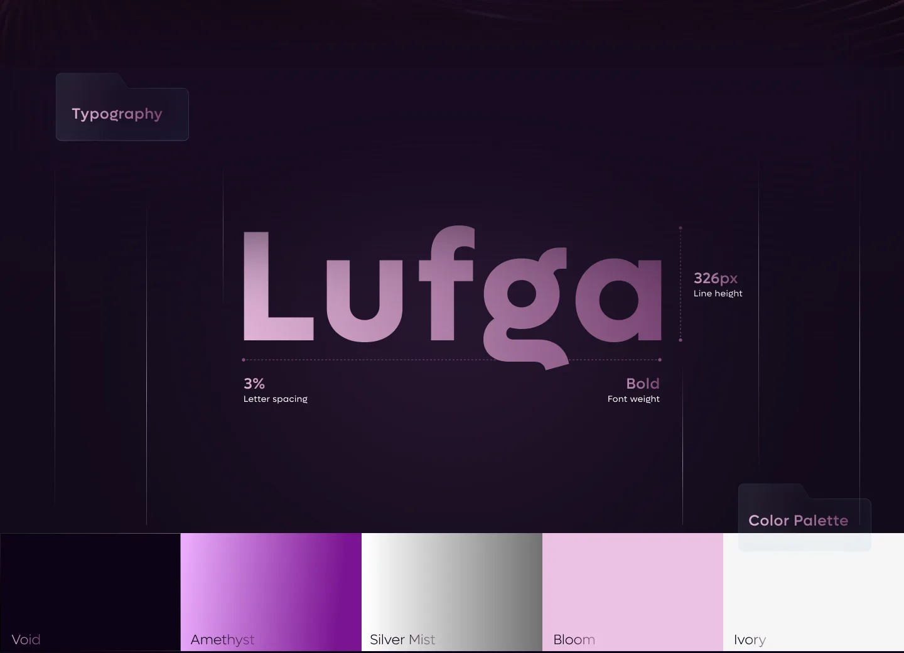
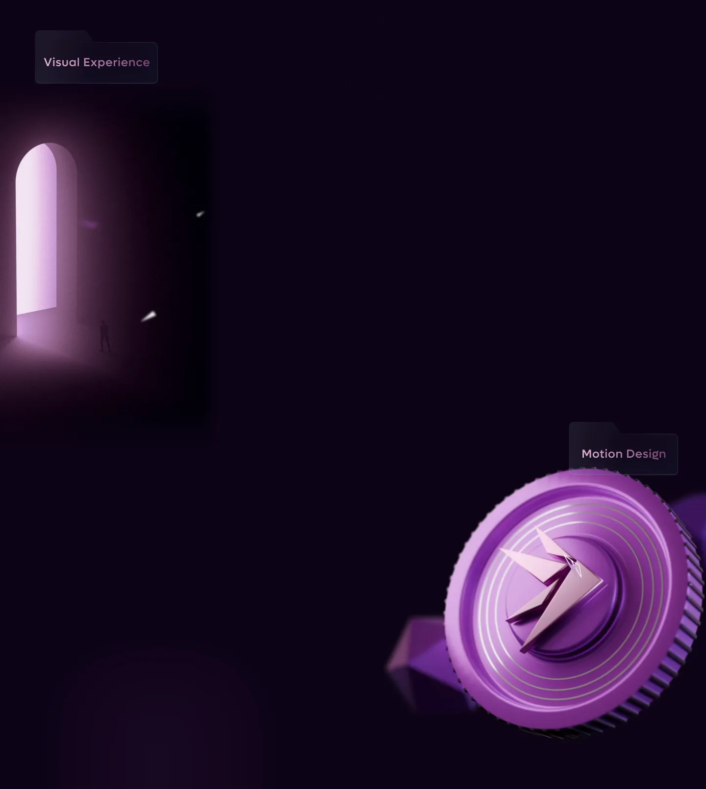
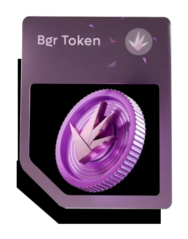
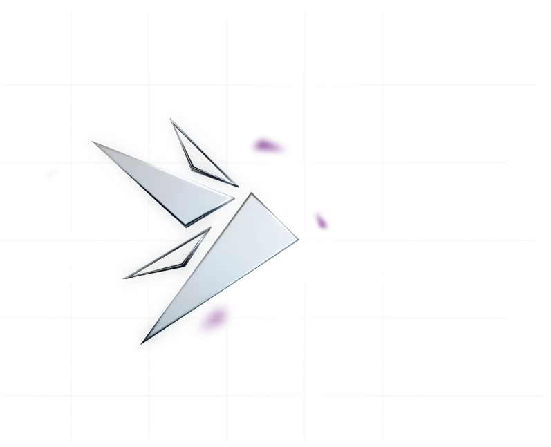
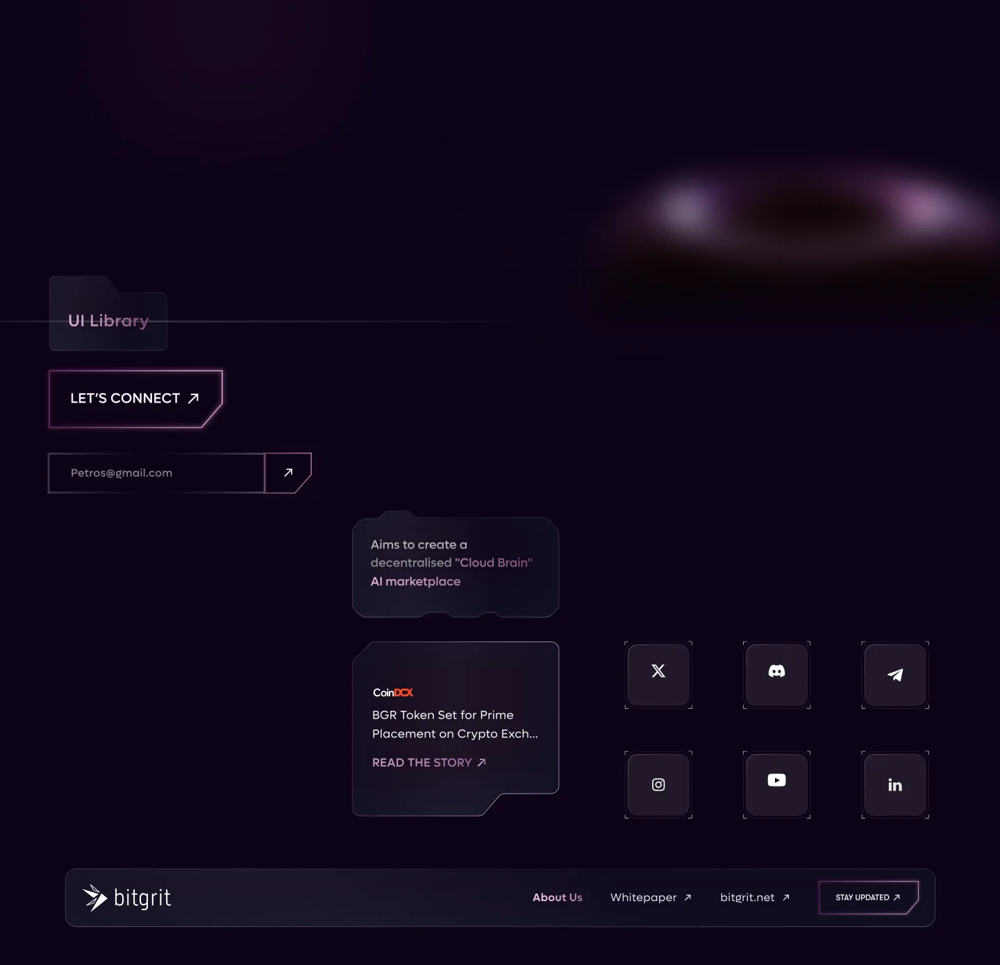
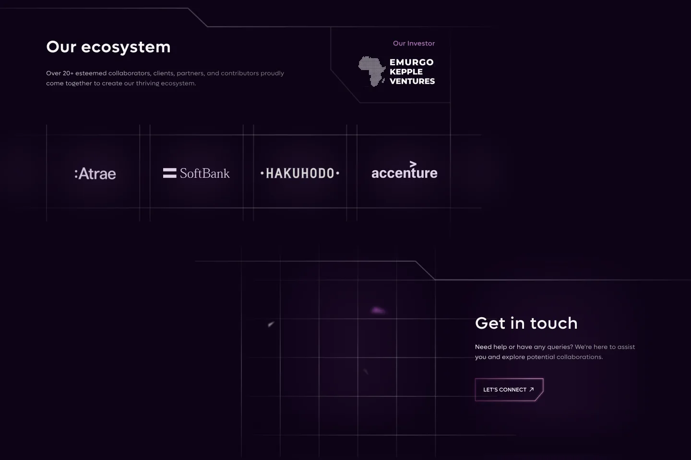
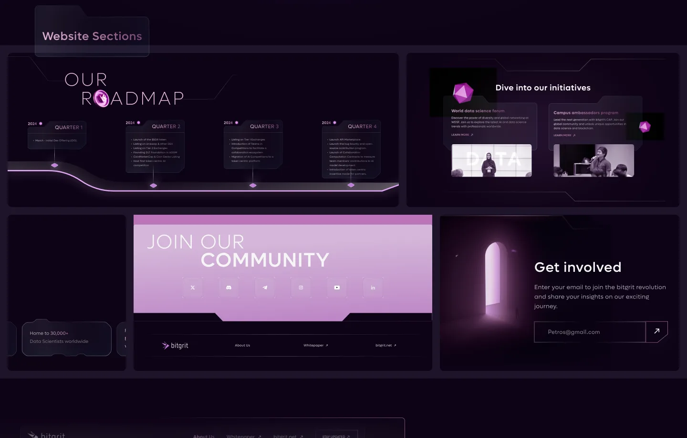
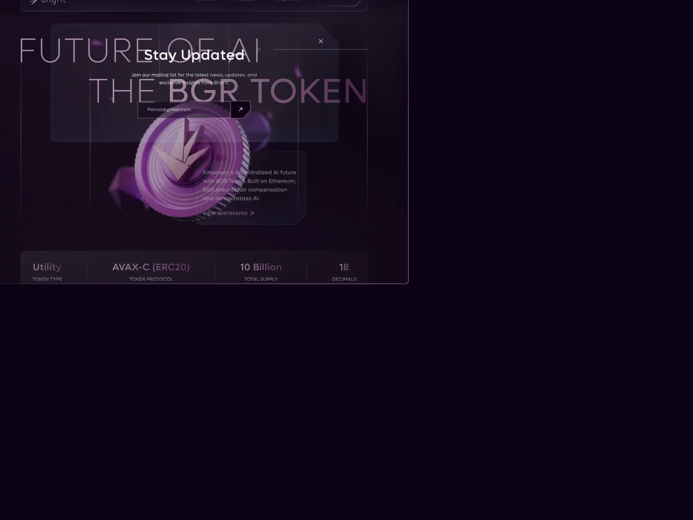
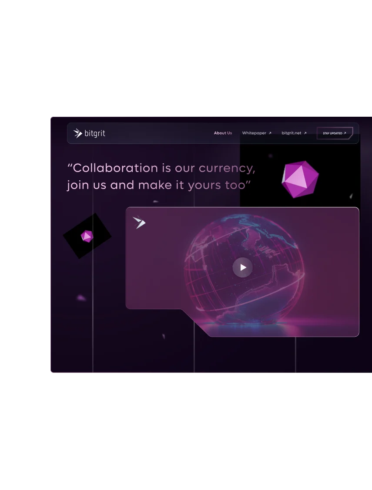
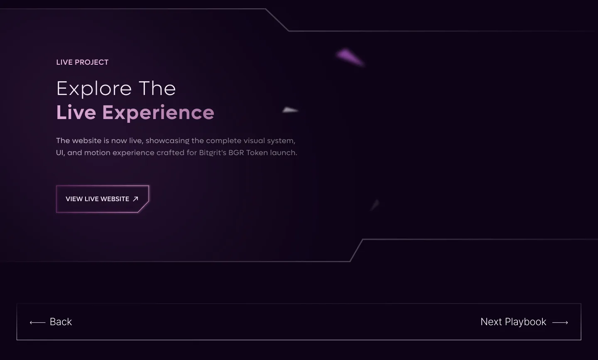
Explore The Live Experience
The website is now live, showcasing the complete visual system, UI, and motion experience crafted for Bitgrit’s BGR Token launch.